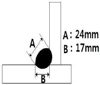
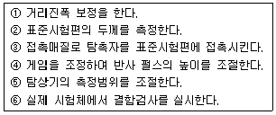
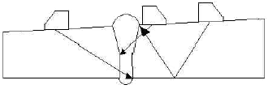

초음파비파괴검사기사 (2014-03-02 기출문제)
1과목: 비파괴검사 개론
1. 초음파탐상시험의 장점이 아닌 것은?
- 결함으로부터의 지시를 곧바로 얻을 수 있다.
- 시험체의 한 면만을 이용하여 결함을 측정할 수 있다.
- 내부조직의 입도가 크고 기포가 많은 부품 등의 탐상에 유용하다.
- 침투력이 매우 높아 두꺼운 단면을 갖는 부품의 깊은곳에 있는 결함도 용이하게 검출한다.
(정답률: 87%)

2. 홀 효과(hall effect)를 이용하는 비파괴 검사법은?
- 광탄성법
- 전위차시험법
- 형광 서머그래피법
- 누설자속탐상검사
(정답률: 64%)
3. 다음 비파괴검사 방법 중 결함의 형상을 추정하기 곤란한 검사방법은?
- 침투탐상검사
- 와전류탐상검사
- 방사선투과검사
- 자분탐상검사
(정답률: 86%)
4. 누설검사를 계획하거나 시방서를 작성할 때 이용할 누설 검사의 선택에서 가장 먼저 생각 할 점은?
- 검사비용
- 설계압력
- 누설률의 범위
- 추적가스의 선택
(정답률: 72%)
5. 방사선투과시험에서 반가층이란?
- X, γ 선이 물질 후면으로 투과되어 나온 방사선의 강도가 투과되기 전 표면에서의 강도의 반이 되는 물질의 두께이다.
- 방사선과 물질과의 상호작용시 이온화 과정에 의한 흡수가 필름 안에서 일어나 이때의 자 유전자들이 영상을 흐리게 하는 층을 말한다.
- 방사성 물질이 원래의 크기보다 반으로 줄어들 때의 구분선을 말한다.
- 방사선투과 사진의 질을 점검할 때 표준시험편을 사용하는 데 이의 등급 간의 분류를 말한다.
(정답률: 76%)
6. 철-탄소 평형상태도에서 공정반응의 온도로 옳은 것은?
- 723℃
- 910℃
- 1130℃
- 1538℃
(정답률: 54%)
7. 일반적으로 특수강에 첨가되는 특수 원소의 효과에 대한 설명으로 틀린 것은?
- 질량효과 증대
- 담금성 향상
- 임계냉각속도 상승
- 마텐자이트 변태점 저하
(정답률: 63%)
8. Fe의 비중과 용융점으로 옳은 것은?
- 비중은 2.7이며, 용융점은 660℃이다.
- 비중은 7.8이며, 용융점은 1538℃이다.
- 비중은 8.9이며, 용융점은 1083℃이다.
- 비중은 10.2이며, 용융점은 2610℃이다.
(정답률: 79%)
9. 충격시험에 대한 설명으로 옳은 것은?
- 충격시험은 정적하중시험이다.
- 강의 인성이나 취성을 알 수 있다.
- 충격시험은 재료에 내부 충격을 주어 피로현상을 측정한다.
- 충격값은 재료에 다중 충격을 주었을 때 발산되는 에너지로 나타낸다.
(정답률: 70%)
10. 다이캐스팅용 재료에 가장 적합한 것은?
- 주강
- 주철
- 특수강
- 아연 합금
(정답률: 65%)
11. WC 분말과 Co 분말을 압축성형한 후 약 1400℃로 소결시켜 바이트와 같은 공구에 이용 되는 합금은?
- 초경합금
- 고속도강
- 두랄루민
- 엘렉트론합금
(정답률: 62%)
12. 오스테나이트계 스테인리스강의 특성에 관한 설명 중 틀린것은?
- 내식성이 우수하다.
- 내충격성이 크다.
- 기계가공성이 좋다.
- 강자성이며, 인성이 좋다.
(정답률: 72%)
13. 가장 높은 온도를 측정할 수 있는 열전대 재료는?
- 철-콘스탄탄.
- 크로멜-알루멜
- 백금-백금·로듐
- 구리-콘스탄탄
(정답률: 71%)
14. 단결정을 이용한 집적회로용 금속재료로 전자적 성능이 가장 좋은 원소는?
- S
- Si
- Pb
- Cu
(정답률: 60%)
15. Cartridge brass에 대한 설명으로 틀린 것은?
- 가공용 황동이다.
- 70%Cu + 30%Zn 황동이다.
- 판, 봉, 관, 선을 만든다.
- 금박대용으로 사용하며, 톰백이라고도 한다.
(정답률: 63%)
16. 불활성가스 텅스텐 아크용접(TIG용접)에서 아크쏠림(Arc Blow 또는 Magnetic Blow) 현상이 일어나는 원인이 아닌 것은?
- 자장 효과(magnetic effects)
- 용접 전류 조정이 너무 낮게 되었을 때
- 텅스텐 전극봉이 탄소에 의해 오염되었을 때
- 풋 컨트롤(foot control)장치로 전류를 감소시킬 때
(정답률: 70%)
17. 용접 비드의 가장자리에서 모재 쪽으로 발생하는 균열은?
- 루트 균열
- 토우 균열
- 비드 밑 균열
- 라멜라 테어
(정답률: 75%)
18. 그림과 같은 필릿 용접에서 용접부의 이론 목두께는 약 몇 mm인가?

- 12
- 14
- 17
- 24
(정답률: 78%)
19. 서브머지드 아크 용접의 특징에 대한 설명으로 옳은 것은?
- 용입이 낮다.
- 용융속도가 느리다.
- 용착속도가 느리다.
- 기계적 성질이 우수하다.
(정답률: 67%)
20. 저수소계 피복아크 용접봉의 건조온도 및 건조시간으로 다음 중 가장 적합한 것은?
- 100~150℃, 3~4시간
- 150~200℃, 2시간
- 200~300℃, 3시간
- 300~350℃, 1~2시간
(정답률: 76%)
2과목: 초음파탐상검사 원리
21. 티탄산바륨 진동자의 단점으로 가장 옳은 설명은?
- 수용성이다.
- 음파 송신 효율이 낮다.
- 수명이 짧다.
- 기계적 임피던스가 낮다.
(정답률: 55%)
22. 펄스 반복주파수를 높게 할 때 일어나는 현상을 옳게 설명한 것은?
- 근접한 결함의 분해능이 좋아진다.
- 표시기 상의 탐상도형이 밝아진다.
- 주파수가 낮은 탐촉자의 성능이 나쁘게 된다.
- 임상에코가 발생하기 쉽다.
(정답률: 52%)
23. 다음 중 진동자의 펄스폭 조절은 무엇으로 조절하는가?
- 동축케이블
- 댐핑재
- 보호막
- 탐촉자 튜브
(정답률: 79%)
24. 탐촉자의 주사방법 중 탐촉자를 용접선과 평행하도록 이동하며 용접선 중심과 거리를 일정하게 하여 주사하는 방법은?
- 전후주사
- 좌우주사
- 목돌림주사
- 진자주사
(정답률: 78%)
25. 초음파탐상시험에서 탐상면이 거칠어졌을 경우 취해야 할 가장 적절한 조치는?
- 점도가 낮은 접촉매질과 주파수가 높은 탐촉자를 사용한다.
- 점도가 높은 접촉매질과 주파수가 낮은 탐촉자를 사용한다.
- 점도가 높은 접촉매질과 주파수가 높은 탐촉자를 사용한다.
- 점도가 낮은 접촉매질과 주파수가 낮은 탐촉자를 사용한다.
(정답률: 79%)
26. 원거리 음장에서 빔의 분산각은 무엇에 의해 결정되는가?
- 초음파 탐상장치의 크기에 좌우된다.
- 진동자 직경에 반비례하고, 초음파 파장에 비례한다.
- 진동자 직경에 비례하고, 초음파 파장에 반비례한다.
- 진동자 직경과 초음파 파장에 비례한다.
(정답률: 72%)
27. 기계 가공한 단조품의 평행부품을 수침법으로 탐상할 때 결함 지시 없이 부분적으로 저면에코가 낮아졌다. 다음 중 가장 가능성이 높은 경우는?
- 조대한 결정립
- 작은 가늘고 긴 결함
- 큰 비금속 개재물
- 탐상면에 평행하지 않는 균열
(정답률: 36%)
28. 물과 철의 음파 임피던스는 각장 1.49과 42.1이다. 물과 철의 경계면에서 반사되는 음파 에너지는 몇 %인가?
- 13.0
- 43.6
- 16.9
- 93.0
(정답률: 47%)
29. 초음파현미경(Scanning Acoustic Microscope:SAM)에 대한 설명 중 틀린 것은?
- 표면 및 내부의 미세한 탄성적인 정보를 알 수 있다.
- 주로 200MHz~1GHz 정도의 고주파수가 사용된다.
- 음향렌즈로 초음파 빔을 집속시켜 시험체에 입사시킨다.
- 누설탄성표면파를 발생시킬 수 있다.
(정답률: 65%)
30. 오스테나이트계 스테인리스강의 초음파탐상에 적합한 탐촉자가 아닌 것은?
- 고분해능 탐촉자
- 점집속 사각탐촉자
- 분할형 사각탐촉자
- 지연재형 사각탐촉자
(정답률: 53%)
31. 수직 종파를 사용하여 연강의 속도를 측정하여 보니 5900m/s이었다. 이 연강에 탐촉자를 적절히 조절하여 표면파를 발생시켰다면 표면파의 속도는 일반적으로 다음 중 어느 값에 근접하는가?
- 5900m/sec
- 2950m/sec
- 2655m/sec
- 1475m/sec
(정답률: 64%)
32. 초음파 탐상시 저면반사의 지시를 감소시키는 원인으로 가장 거리가 먼 것은?
- 표면이 거칠 경우
- 결정 입자가 미세할 경우
- 기공 같은 작은 결함이 많을 경우
- 표면과 결함 사이의 각도가 다양할 경우
(정답률: 86%)
33. 초음파탐상시험을 할 때 결함에서 반사된 에너지의 양은 다음 어느 것에 의존하는가?
- 결함의 크기, 방향에만 의존한다.
- 결함의 방향, 종류에만 의존한다.
- 결함의 크기, 종류에만 의존한다.
- 결함의 크기, 방향, 종류에 의존한다.
(정답률: 89%)
34. 다음 중 탐촉자의 진동수는 주로 무엇의 함수인가?
- 여기전압
- 결정체의 두께
- 탐상기의 펄스 반복률
- 종적인 접속요소
(정답률: 43%)
35. 다음 중 빔의 퍼짐이 적고, 감도와 분해능이 가장 우수한 탐촉자는?
- 2Q10N
- 2Q20N
- 5Q10N
- 5Q20N
(정답률: 60%)
36. 신속한 거리측정을 할 수 있도록 탐상기의 스크린상에 표시되어 있는 눈금을 무엇이라 하는가?
- 마커
- 게이트
- 수직축
- 스위프
(정답률: 73%)
37. 시험체의 음향 이방성 측정에 있어 횡파의 음속비를 측정하려는 경우 사용되지 않는 기기는?
- 초음파 탐상기
- 초음파 두께측정기
- 초음파 현미경
- 음속 측정 장치
(정답률: 68%)
38. 종파가 고체로 입사할 때 입사각이 첫 번째 임계각보다 작으면 고체 내에는 어떤파가 생기는가?
- 종파와 횡파
- 종파와 표면파
- 종파
- 횡파
(정답률: 63%)
39. 초음파탐상시험에 있어서 경사각탐상에 대한 설명으로 옳은 것은?
- 경사각탐상에서의 측정대상은 결함위치, 저면에코높이 및 결함길이이다.
- 결함위치의 추정에는 에코높이가 최소로 되는 탐촉자 위치를 찾고, 굴절각과 빔진행거리에 의한 계산으로부터 결함 위치를 추정한다.
- 결함에 초음파 빔이 직접 부딪히는 탐상방법을 직사법이라 부르고, 직사법에서 검출 곤란한 방향을 갖는 결함에는 다중반사법이 적용된다.
- 결함 에코 높이는 빔진행거리가 길수록 낮아지기 때문에 탐상에 앞서 감도 조정용 시험편을 이용하여 거리와 에코높이의 관계를 구해 놓고 평가한다.
(정답률: 55%)
40. 초음파탐상시험시 표시기에 나타난 에코(echo)의 파형은 어떻게 읽는가?
- 높이는 최고치, 위치는 에코가 일어서기 시작하는 점의 시간축 눈금을 읽음
- 높이는 최고치, 위치도 높이가 최고치 점인 시간축 눈금을 읽음
- 높이는 최고치의 80%, 위치는 에코 높이의 10% 되는 곳의 시간축 눈금을 읽음
- 높이는 최고치의 80%, 위치는 에코 높이의 50% 되는 곳의 시간축 눈금을 읽음
(정답률: 59%)
3과목: 초음파탐상검사 시험
41. 경납땜 이음부(Brazed joint)의 초음파탐상검사에 관한 설명으로 틀린 것은?
- 일반적으로 경사각탐상으로 검사한다.
- 일반적으로 겹침(Lamination)탐상과 동일한 방법으로 검사한다.
- 접착이 잘 되었더라도 접착부위에서 에코가 발생할 수 있다.
- 두께가 얇은 경우에는 다중 에코법으로 검사할 수 있다.
(정답률: 58%)
42. 탐촉자와 시험체 사이에 접촉매질을 사용하지 않고 탐상하는 기법을 비접촉식이라 한다. 다음 중 비접촉식으로 틀린것은?
- 전자 초음파법
- Dry접촉매질 탐촉자법
- 레이저 빔
- 저주파법
(정답률: 47%)
43. 경사각탐상시에 표준시험편 STB-A1의 사용범위가 아닌 것은?
- 입사점측정
- 굴절각측정
- 분해능측정
- 기준감도 설정
(정답률: 62%)
44. 두께가 50mm인 V형 맞대기 용접부를 60° 경사각 초음파탐상을 수행하였다. 화면상에 초음파 빔행정의 길이가 150mm인 지시가 나타났으며, 이때 탐촉자의 입사점이 용접부의 중심선에서 130mm 떨어져 있다. 다음 중에서 이 지시를 나타낼 가능성이 가장 높은 결함은?
- 탐촉자에서 가까운 쪽의 열영향부 내의 균열
- 용접부와 모재 사이 경계면에 발생한 융합부족
- 용접부 중앙에 위치한 단일 슬래그
- 용접부 루트 균열
(정답률: 48%)
45. 초음파탐상기에 요구되는 주요 성능에 관한 설명으로 틀린것은?
- 초음파탐상기의 성능은 초음파탐상기의 시간축직선성, 증폭직선성, 분해능의 3가지 인자에 의해 결정된다.
- 시간축직선성은 수신된 초음파펄스의 음압과 CRT에 나타난 에코높이의 비례관계 정도를 말한다.
- 증폭직선성이 떨어지면 결함을 과소 혹은 과대하게 평가할 수 있다.
- 분해능이 나쁘면 근접한 2개의 반사원으로부터 에코를 분리 식별할 수 있는 능력이 떨어진다.
(정답률: 50%)
46. 펄스반사식 초음파탐상법에서 주파수를 선정할 때 고려하여야 할 사항이 아닌 것은?
- 탐상하고자 하는 최소결함의 크기
- 시험체의 형상
- 시험체의 입자구조 및 크기
- 시험체의 초음파 흡수
(정답률: 60%)
47. A-스캔 초음파 탐상기를 사용하여 결함을 탐상하는 경우 다음 내용을 올바른 순서대로 나열한 것은?

- ①→②→③→④→⑤→⑥
- ③→②→④→⑤→①→⑥
- ③→②→⑤→④→①→⑥
- ③→④→①→⑤→②→⑥
(정답률: 60%)
48. 용접부의 경사각탐상시 X개선면의 루트(Root)부위 결함인 용입부족을 쉽게 검출할 수 있는 주사 방법은?
- V반사법
- K크리프법
- 탠덤 주사법
- 투과법
(정답률: 62%)
49. 펄스에코 방식의 초음파탐상장비에서 탐촉자에 전압을 걸어 초음파를 발생시키는 기능을 하는 것은?
- 펄서(pulser)
- 수신기(receiver)
- 증폭기(amplifier)
- 동기장치(syncronizer)
(정답률: 71%)
50. 초음파탐상시험 방법과 진동형식의 연결이 잘못된 것은?
- 표면파 탐상 - 횡파
- 경사각 탐상 - 횡파(또는 종파)
- 수직 탐상 - 종파
- 판파 탐상 - 판파
(정답률: 68%)
51. 초음파탐상검사시 결함의 크기 측정에 영향을 미치는 인자를 나열한 것은?
- 결함의 특성, 측정방법, 시험체의 조건
- 시험체의 조건, 검사자의 자격, 대비시험편의 크기
- 탐상기기, 탐촉자, 검사시간
- 시험체의 표면(접촉)조건, 측정방법, 탐상기의 자동/수동 여부
(정답률: 78%)
52. 직경 12mm, 중심주파수 2MHz인 수침용 초음파 탐촉자의 물에서의 근거리음장한계거리(mm)는 얼마인가?
- 12
- 24
- 48
- 96
(정답률: 38%)
53. 25mm의 알루미늄 제품을 수침법을 이용하여 탐상 할 때 적합한 물 거리는?
- 4mm
- 7mm
- 10mm
- 13mm
(정답률: 23%)
54. EMAT(electro-magnetic acoustic transducer)의 적용 분야로 부적당한 것은?
- 고온 또는 극저온의 시험체 탐상
- 표면이 거칠거나 오염이 심한 시험체의 탐상
- 비자성 금속의 탐상
- 접촉매질을 적용하기가 곤란한 경우의 탐상
(정답률: 68%)
55. 초음파탐상 결과 검출한 결함의 크기를 평가하기 위하여 DGS선도를 이용할 수 있는데 이 DGS선도의 작성시 기준으로 하는 결함은?
- 구형결함
- 원주형결함
- 띠형평면결함
- 원형평면결함
(정답률: 54%)
56. 다음 중 탐촉자 선정에 고려해야 될 사항이 아닌 것은?
- 탐상부위의 표면상태
- 탐상두께 범위
- 결함에 대한 탐촉자의 감도
- 표준시험편의 크기
(정답률: 72%)
57. 판두께 15mm인 맞대기 용접부를 경사각탐상한 결과 빔진행 거리가 55mm로 측정된 결함이 검출되었다면 이 결함은 얼마의 깊이에 있는가? (단, 탐촉자 시험주파수: 4MHz, 진동자 크기: Φ20mm, 공칭 굴절각: 70°, 실측굴절각: 68°이다.)
- 7.9mm
- 9.4mm
- 11.0mm
- 13.2mm
(정답률: 50%)
58. 배관의 길이이음 용접부의 경사각탐상에 대한 설명 중 틀린 것은?
- 탐촉자와 시험체의 접촉조건이 평판 용접부의 검사 때와 다르다.
- 외면으로부터 탐상하는 경우 내면으로의 입사각이 평판의 경우와 다르다.
- Skip거리는 동일한 두께의 판재에 비하여 길어지며, 두께/외경 값이 작을수록 더 커진다.
- 외면으로부터 탐상하는 경우 탐상한계로 두께/외경 값이 크게 될수록 굴절각을 작게 하여야 한다.
(정답률: 58%)
59. 펄스반사법에 의한 판재의 초음파탐상에서 수직탐촉자를 사용할 때 다음 중 가장 쉽게 검출할 수 있는 결함은?
- 핀홀
- 용접 기공
- 라미네이션
- 표면 미세균열
(정답률: 75%)
60. 단조품의 수직탐상에서 탐상감도 설정시 대비시험편의 인공 결함을 이용할 경우의 장점으로 틀린 것은?
- 검사결과의 상호 비교가 용이하다.
- 검출 목적에 부합되는 깊이 및 크기의 인공 불연속을 임의로 만들 수 있다.
- 탐상감도를 나타내기가 용이하다.
- 표면거칠기 및 시험체 곡률 등의 영향이 자동적으로 보정 된다.
(정답률: 67%)
4과목: 초음파탐상검사 규격
61. 보일러 및 압력용기에 대한 초음파 탐상검사(ASME Sec.V, Art.4)의 거리진폭기법에서 주사감도 수준은 대비 수준 이득 설정보다 최소 몇 dB높게 설정하여야 하는가?
- 6dB
- 8dB
- 10dB
- 12dB
(정답률: 77%)
62. 압력용기용 강판의 초음파탐상 검사방법(KS D 0233)에서 결함에코 높이에 의해 결함의 정도를 구분하는 종류가 아닌것은?
- 작음
- 가벼움
- 중간
- 큼
(정답률: 56%)
63. 강 용접부의 초음파탐상 시험방법(KS B 0896)에 따라 60°인 경사각탐촉자의 공칭굴절각과 STB굴절각과의 차이는 상온에서 몇 도의 범위 내로 하여야 하는가?
- ±0.5°
- ±1.0°
- ±2.0°
- ±4.0°
(정답률: 50%)
64. 보일러 및 압력용기의 재료에 대한 초음파탐상검사(ASME Sec.V, Art.5)에서 볼트재의 수직빔 검사교정에 쓰이는 A형 시험편의 평저공의 위치는?
- 시험편의 끝부분의 D/5
- 시험편의 끝부분의 D/4
- 시험편의 중심선
- 시험편의 끝부분의 D/3
(정답률: 59%)
65. 강 용접부의 초음파탐상 시험방법(KS B 0896)부속서6에 따라 판두께 20mm인 강 용접부의 시험 결과를 분류할 때, M검출 레벨의 경우 흠 에코 높이의 영역이 Ⅲ이고, 지시길이가 9mm이면 2류로 분류된다. 만약 지시길이는 변함이 없으나 흠 에코 높이의 영역이 Ⅳ로 바뀌었다면 흠의 분류는?
- 1류
- 2류
- 3류
- 4류
(정답률: 59%)
66. 강 용접부의 초음파탐상 시험방법(KS B 0896)으로 용접부를 탐상할 때 경사각 탐촉자의 공칭주파수에 따른 진동자의 공칭치수가 틀린 것은?
- 2MHz, 10×10mm
- 2MHz, 14×14mm
- 5MHz, 10×10mm
- 5MHz, 20×20mm
(정답률: 59%)
67. 강 용접부의 초음파탐상 시험방법(KS B 0896)에 따른 탐상시험의 준비시 음향 이방성의 점검에 대한 설명이다. 다음 중 음향 이방성이 있다고 판정되는 내용으로 틀린 것은?
- 횡파 측정에서 횡파 음속비가 1.⑤인 경우
- 횡파 측정에서 횡파 음속비가 1.12.인 경우
- 공칭 굴절각 60°인 경사각 탐촉자에 의한 측정에서 굴절 각도차가 3°인 경우
- 공칭 굴절각 60°의 경사각 탐촉자에 의한 측정에서 굴절 각도차가 1°인 경우
(정답률: 63%)
68. 강 용접부의 초음파 탐상시험방법(KS B 0896)으로 탐상시 DAC회로를 사용할 때 에코 높이 구분선의 작성방법으로 옳지 않은 것은?
- A2형계 표준시험편의 Φ2×2mm의 표준구멍을 기준으로 사용한다.
- 에코 높이 구분선은 원칙적으로 실제 사용하는 탐촉자를 사용해 작성한다.
- 표준 에코 높이 구분선과 6dB씩 다른 에코 높이 구분선을 3개 이상 작성한다.
- RB-4를 사용하여 에코 높이 구분선을 작성하는 경우는 RB-4의 표준구멍을 기준으로 사용하기도 한다.
(정답률: 56%)
69. 초음파 탐촉자의 성능측정 방법(KS B ⑤35)에서 굴절각이 75°인 경사각 탐촉자로 굴절각을 측정하려 할 때 표준시험편 STB-A1 에 사용되는 관통 구멍의 지름은 얼마인가?
- 1㎜
- 1.5㎜
- 4㎜
- 50㎜
(정답률: 60%)
70. 보일러 및 압력용기의 재료에 대한 초음파탐상검사(ASME Sec.V Art.5)의 아날로그 장비 직선성 점검 주기로 옳은 것은?
- 3개월 이하
- 6개월 이하
- 1년 이하
- 5년 이하
(정답률: 61%)
71. 압력용기용 강판의 초음파탐상 검사방법(KS D 0233)에 의한 이진동자 수직탐촉자 사용 시 결함의 분류와 표시기호의 설명이 옳은 것은?
- X주사시 결함의 정도가 가벼움이고, DL선을 넘고 DM선 이하시 표시기호는 △ 이다.
- X주사시 결함의 정도가 중간이고, DM선을 넘고 DH선 이하시 표시기호는 ○ 이다.
- Y주사시 결함의 정도가 가벼움이고, DM선을 넘고 DL선 이하시 표시기호는 ○이다.
- Y주사시 결함의 정도가 가벼움이고, DM선을 넘고 DH선 이하시 표시기호는 △ 이다.
(정답률: 44%)
72. 보일러 및 압력용기에 대한 표준초음파탐상검사(ASME Sec. V, Art.23 SB-548)에서 알루미늄 합금판을 수침법으로 검사할 때 탐촉자와 시험체 사이의 거리 허용변동 범위는?
- ±25.4㎜
- ±8.5㎜
- ±6.4㎜
- ±3.2㎜
(정답률: 70%)
73. 보일러 및 압력용기에 대한 초음파 탐상검사 (ASME Sec. V, Art.5)에 따라 튜브류를 탐상시 사용하는 교정시험편의 교정 반사체(calibration reflectors) 에 관한 내용으로 옳지 않은 것은?
- 형태는 축방향 노치(notch)이다.
- 폭은 약 1.6㎜ 이하이어야 한다.
- 길이는 약 1인치 또는 그 이하이다.
- 깊이는 약 0.1㎜ 또는 공칭 벽 두께의 5%중 큰 쪽을 초과하여야 한다.
(정답률: 44%)
74. 강 용접부의 초음파탐상 시험방법(KS B 0896)에서 원둘레 이음 용접부의 경사각탐상시 탐촉자의 접촉면을 시험체의 곡률에 맞추어 탐상해야 하는 시험체의 곡률 반지름은 몇 ㎜ 이하일 때인가?
- 300㎜
- 150㎜
- 200㎜
- 250㎜
(정답률: 40%)
75. 탄소강, 저합금강 및 마르텐사이트계 스테인리스강 주강품의 초음파탐상시험을 위한 표준방법(ASME Sec. V, Art.23 SE-609)에서 주강품의 탐상에 사용되는 대비시험편의 인공 결함에 대한 설명으로 옳은 것은?
- 3/64~8/64 인치까지의 크기로 배열되어 있다.
- 단독의 인공결함 구멍지름은 1/4 인치이다.
- 1∼8 인치 범위를 포함하는 깊이로 되어 있다.
- 인공결함의 형상은 모두 측면공이다.
(정답률: 56%)
76. 강 용접부의 초음파탐상 시험방법(KS B 0896)에 따라 그림과 같이 맞대기 이음의 경사각 탐상시 판두께 40㎜ 이하의 경우 한 쪽면 양쪽에서 탐상할 때 사용하는 탐촉자의 공칭 굴절각으로 올바른 것은?

- 70˚
- 70˚와 또는 60˚
- 70˚또는 60˚와 45˚ 병용
- 70˚와 60˚병용 또는 60˚와 45˚병용
(정답률: 30%)
77. 초음파탐상 시험용 표준시험편(KS B 0831)에서 다음 검정 장치류 중 G형 표준시험편의 탐촉자 진동자 치수로 사용되지 않은 것은?
- ø28㎜
- ø20㎜
- ø18㎜
- ø14㎜
(정답률: 47%)
78. 보일러 및 압력용기에 대한 초음파탐상검사(ASME Sec. V, Art.4)에 따른 탐상장비의 요건에 대한 설명으로 옳은 것은?
- 장비는 적어도 6~15Mhz 사이의 주파수에서 작동할 수 있어야 한다.
- 장비는 2.0dB 이하의 단계로 조절할 수 있는 게인조절기를 갖추어야 한다.
- 장비가 댐핑조절기를 갖추고 잇다면 검사 감도의 저하 시댐핑조절기를 사용한다.
- 리젝트 조절기는 검사의 선형성에 영향을 주므로 항상 “ON”위치에 놓아야 한다.
(정답률: 70%)
79. 금속재료의 펄스반사법에 따른 초음파 탐상 시험방법 통칙(KS B 0817)에서 탐상기의 조정은 실제로 사용하는 탐상기와 탐촉자를 조합한 후 전원 스위치를 켠 후 최소 몇 분이 경과한 후 수행해야 하는가?
- 5분
- 10분
- 15분
- 20분
(정답률: 84%)
80. 보일러 및 압력용기에 대한 초음파 탐상검사(ASME Sec. V, Art.4)에서 일반적인 경우 탐촉자의 이동속도는 얼마를 초과할 수 없도록 규정하고 있는가?
- 150㎜/초(6인치/초)
- 150㎜/초(6인치/분)
- 225㎜/초(9인치/초)
- 225㎜/초(9인치/분)
(정답률: 54%)
내부조직의 입도가 크고 기포가 많은 부품 등의 탐상에 유용한 이유는 초음파가 공기나 기포 등의 경계면에서 반사되기 때문입니다. 따라서 내부에 기포가 많은 부품이나 두꺼운 단면을 갖는 부품의 깊은 곳에 있는 결함도 용이하게 검출할 수 있습니다. 또한, 결함으로부터의 지시를 곧바로 얻을 수 있어 검사 시간이 단축되는 장점도 있습니다.